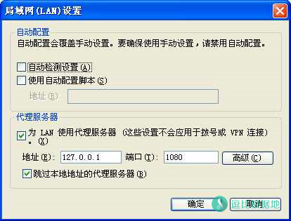
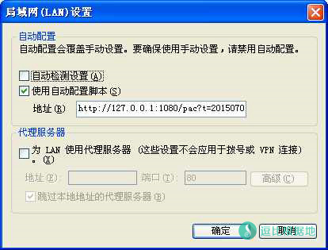

有很多人不知道该怎么选择Shadowsocks与VPN，我就来简单解释一下两者的区别和优缺点。
百科介绍
VPN，即虚拟专用网络
虚拟专用网络的功能是：在公用网络上建立专用网络，进行加密通讯。在企业网络中有广泛应用。VPN网关通过对数据包的加密和数据包目标地址的转换实现远程访问。VPN有多种分类方式，主要是按协议进行分类。VPN可通过服务器、硬件、软件等多种方式实现。
Shadowsocks，即Sock5代理
采用socks协议的代理服务器就是SOCKS服务器，是一种通用的代理服务器。Socks是个电路级的底层网关，是DavidKoblas在1990年开发的，此后就一直作为Internet RFC标准的开放标准。Socks 不要求应用程序遵循特定的操作系统平台，Socks 代理与应用层代理、 HTTP 层代理不同，Socks 代理只是简单地传递数据包，而不必关心是何种应用协议（比如FTP、HTTP和NNTP请求）。所以，Socks代理比其他应用层代理要快得多。
VPN顾名思义，虚拟专网，你接入VPN就是接入了一个专有网络，那么你访问网络都是从这个专有网络的出口出去，好比你在家，你家路由器后面的网络设备是在同一个网络，而VPN则是让你的设备进入了另一个网络。同时你的IP地址也变成了由VPN分配的一个IP地址。通常是一个私网地址。你和VPN服务器之间的通信是否加密取决于连接VPN的具体方式/协议。
Sock5代理服务器则是把你的网络数据请求通过一条连接你和代理服务器之间的通道，由服务器转发到目的地。你没有加入任何新的网络，只是http/socks数据经过代理服务器的转发送出，并从代理服务器接收回应。你与代理服务器通信过程不会被额外处理，如果你用https，那本身就是加密的。
总结
VPN的开发目的是给企业内网直接传输加密数据，最重要的就是安全性，相反VPN的流量特征变得很明显，特别是SSL VPN类型，比如Openvpn有SSL证书的加密，安全性不必多说，但是握手依然是明文，流量更加明显，导致匹配流量特征很容易，在我这里一旦链接Openvpn那就是秒封。
VPN目前就科学上网方面来讲，PPTP大部分地区已死，L2TP大部分地区已经出现干扰和断开连接情况，Openvpn一封一个准。而anyconnect大多数都是企业用的，所以墙不敢乱封，IKEv1/IKEv2需要注意证书中间人攻击问题。
所以，在VPN科学上网这方面，一些地区已经根据VPN的流量特征做出了相应的匹配策略，可以有效封杀VPN了。
Shadowsocks的开发目的就是穿透防火墙，最重要的是增加墙的匹配流量效率封杀成本和难度，也就是混淆隐秘性。
Shadowsocks是更注重流量混淆隐秘，VPN则是更注重加密安全性。如果你需要安全你可能需要 VPN 或者 Shadowsocks+TOR匿名 ，否则就抗干扰能力来说Shadowsocks更适合拿来科学上网，VPN中的Opnevpn是最安全的VPN协议之一，然而第一个被墙宣布效率检测、封杀！
没有完美的工具，VPN和Shadowsocks在某种程度上可以说是两种相反的技术，开发目的不一样，注重点也不一样，缺点相应的也不一样，所以根据当地运营商的封杀策略选择最适合自己的方式。
Shadowsocks全局模式与VPN的区别
VPN控制的是你电脑的整个网络，只要需要连接到互联网的流量都会经过vpn。
你的IP会被更换为VPN的IP。连接VPN只需要知道IP和账号密码。
Shadowsocks的全局模式，是设置你的系统代理的代理服务器，使你的所有http/socks数据经过代理服务器的转发送出。而只有支持socks5或者使用系统代理的软件才能使用Shadowsocks（一般的浏览器都是默认使用系统代理）。
经过代理服务器的IP会被更换。连接Shadowsocks需要知道IP、端口、账号密码和加密方式。但是Shadowsocks因为可以自由换端口，所以定期换端口就可以有效避免IP被封！

Shadowsocks全局模式与PAC模式的区别
上面已经解释了Shadowsocks的全局模式，而PAC模式就是会在你连接网站的时候读取PAC文件里的规则，来确定你访问的网站有没有被墙，如果符合，那就会使用代理服务器连接网站，而PAC列表一般都是从GFWList更新的。GFWList定期会更新被墙的网站（不过一般挺慢的）。
简单地说，在全局模式下，所有网站默认走代理。而PAC模式是只有被墙的才会走代理，推荐PAC模式，如果PAC模式无法访问一些网站，就换全局模式试试，一般是因为PAC更新不及时（也就是GFWList更新不及时）导致的。

还有，说一下Chrome不需要Proxy SwitchyOmega和Proxy SwitchySharp插件，这两个插件的作用就是，快速切换代理，判断网站需不需要使用某个代理的（ss已经有pac模式了，所以不需要这个）。如果你只用shadowsocks的话，就不需要这个插件了！
个人认为现在的Shadowsocks加密混淆技术是很不错的，推荐使用Shadowsocks，想要做到类VPN的方式（控制整个网络）可以搭配Proxifier使用，教程看这里。
上面仅代表个人的浅层观点，目前墙针对VPN的封锁越来越严重，比较有名的OpenVPN已经被第一个集火了！而PPTP也逐渐不稳定了起来，可能今天能用，明天就不能用了。L2TP和IPSec目前还好，除了部分封锁严重地区其他的还无法效率匹配流量。
转载请超链接注明：逗比根据地 » Shadowsocks（Sock5代理）的PAC模式与全局模式与VPN的区别
责任声明：本站一切资源仅用作交流学习，请勿用作商业或违法行为！如造成任何后果，本站概不负责！


你只需要知道，你的数据价值远低于破解你数据得到的价值，墙目前是想办法更有效更准确的匹配流量特征的方式去封锁。
墙并不是一个独立的个体，墙是 各大一级运营商+遍及全国省分的超级计算机集群+工作人员等组成的，墙就是在各出口处做了一个检查站之类的，用于过滤经过的流量，采集样本、封锁符合特征的流量等。
VPN从一开始就没去考虑 隐秘性，而SS/SSR等则把流量伪装的很不起眼，很正常，让墙看不出有什么区别。
就像人群中，一个间谍长的丑不拉几的影响市容，看见一次就印象深刻，另一个间谍则是长相普通，大众脸，大众衣服，很不起眼，很难引起注意。
我也只能解释这么多了，我不是程序员和教师，也没办法说的太通俗，太让人理解。
系统代理模式是判断 数据是否进入SSR客户端， 代理规则是判断 进入客户端的流量是否走代理。
当使用 系统代理模式 - PAC模式后，浏览器没有安装任何管理代理的扩展，直接读取系统代理，那么访问谷歌是浏览器会去PAC中查看规则，然后判断谷歌网站走代理，然后把谷歌网站的数据发送到本地代理服务器 127.0.0.1 1080，也就是SSR客户端中，然后如果你选择了 绕过局域网和非大陆（海外），那么SSR客户端会判断谷歌网站的IP是否是局域网和非大陆，而结果是非大陆（海外）的，于是不走代理，直连。
如果代理规则 你选择了 绕过局域网和大陆，那么谷歌IP是国外的，于是SSR客户端就把谷歌网站数据发给SSR服务端，也就是走代理。
自己慢慢想，很简单的概念，如果你是浏览器代理管理扩展 或其他软件 直接设置SOCKS5 127.0.0.1 1080代理（相当于系统代理 全局模式），那么直接就跳过了 系统代理模式 的判断步骤，直接开始 代理规则 判断。